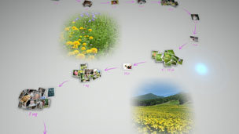
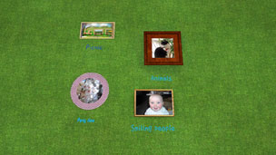

Dingen die u kunt doen in Photo Gallery
In Photo Gallery kunt u gebruik maken van de volgende functies.
Foto's bekijken op basis van gebeurtenis
Wanneer u Photo Gallery opstart, worden alle foto's die zijn opgeslagen in de systeemopslag van uw PS3™-systeem automatisch geanalyseerd en gegroepeerd per "gebeurtenis", op basis van de datum en het tijdstip van de foto's. Het scherm waarop de foto's worden weergegeven als gebeurtenissen wordt [Gebied bibliotheek] genoemd.

Foto's organiseren
U kunt foto's groeperen op basis van de datum en het tijdstip waarop ze werden gemaakt, op basis van het aantal personen op de foto's, op basis van de gelaatsuitdrukking van mensen op de foto's, alsook op basis van andere opties. Nadat de foto's zijn gegroepeerd, kunt u een andere groepeeroptie gebruiken om de selectie binnen de groep te verkleinen, zodat bijvoorbeeld alleen de foto's van lachende kinderen in een bepaalde groep zitten.
Een afspeellijst van geselecteerde foto's aanmaken
U kunt een afspeellijst aanmaken van foto's die u selecteert of van foto's die werden gegroepeerd met behulp van een andere optie onder  (Groeperen). De door u gemaakte afspeellijsten worden weergegeven in [Gebied afspeellijst].
(Groeperen). De door u gemaakte afspeellijsten worden weergegeven in [Gebied afspeellijst].
